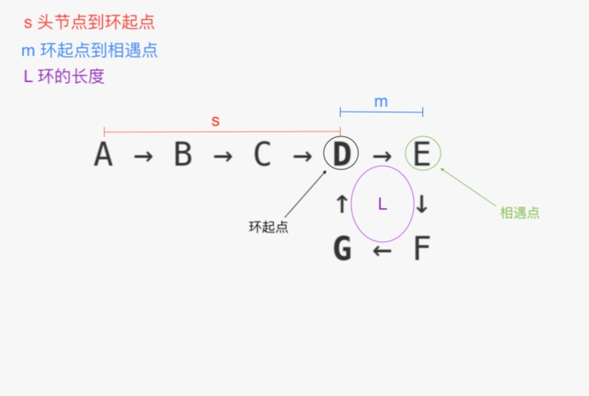

<!DOCTYPE html><html><head><meta charset="utf-8"><meta name="X-UA-Compatible" content="IE=edge"><title> Loop in Linked List · Chouth</title><meta name="description" content="Loop in Linked List - Tianhao Wu"><meta name="viewport" content="width=device-width, initial-scale=1"><link rel="icon" href="/favicon.jpg"><link rel="stylesheet" href="/css/apollo.css"><link rel="search" type="application/opensearchdescription+xml" href="https://chouth.github.io/atom.xml" title="Chouth"></head><body><div class="wrap"><header><a href="/" class="logo-link"></a><ul class="nav nav-list"><li class="nav-list-item"><a href="/" target="_self" class="nav-list-link">BLOG</a></li><li class="nav-list-item"><a href="/archives/" target="_self" class="nav-list-link">ARCHIVE</a></li><li class="nav-list-item"><a href="https://github.com/ChouTH" target="_blank" class="nav-list-link">GITHUB</a></li><li class="nav-list-item"><a href="/atom.xml" target="_self" class="nav-list-link">RSS</a></li></ul></header><main class="container"><div class="post"><article class="post-block"><h1 class="post-title">Loop in Linked List</h1><div class="post-info">Jun 7, 2018</div><div class="post-content"><h1 id="链表中的环"><a href="#链表中的环" class="headerlink" title="链表中的环"></a>链表中的环</h1><h2 id="问题：给定一个单向链表，如何判断链表中是否有环？"><a href="#问题：给定一个单向链表，如何判断链表中是否有环？" class="headerlink" title="问题：给定一个单向链表，如何判断链表中是否有环？"></a>问题：给定一个单向链表，如何判断链表中是否有环？</h2><h2 id="思考"><a href="#思考" class="headerlink" title="思考"></a>思考</h2><p>兔子和乌龟要进行一次赛跑 ，他们将在跑道同一位置同时起跑：</p>
<ol>
<li>如果在<code>直线</code>跑道上  比赛，那么兔子和乌龟最终会分别跑到终点；</li>
<li>如果在<code>圆形</code>跑道上比赛，因为兔子的速度比乌龟快，所以兔子最终会赶上乌龟 。</li>
</ol>
<h2 id="实现"><a href="#实现" class="headerlink" title="实现"></a>实现</h2><figure class="highlight javascript"><table><tr><td class="gutter"><pre><span class="line">1</span><br><span class="line">2</span><br><span class="line">3</span><br><span class="line">4</span><br><span class="line">5</span><br><span class="line">6</span><br><span class="line">7</span><br><span class="line">8</span><br><span class="line">9</span><br><span class="line">10</span><br><span class="line">11</span><br><span class="line">12</span><br><span class="line">13</span><br><span class="line">14</span><br><span class="line">15</span><br><span class="line">16</span><br><span class="line">17</span><br><span class="line">18</span><br><span class="line">19</span><br><span class="line">20</span><br><span class="line">21</span><br><span class="line">22</span><br><span class="line">23</span><br><span class="line">24</span><br><span class="line">25</span><br><span class="line">26</span><br><span class="line">27</span><br><span class="line">28</span><br><span class="line">29</span><br><span class="line">30</span><br></pre></td><td class="code"><pre><span class="line"><span class="keyword">const</span> hasCycle = <span class="function"><span class="keyword">function</span>(<span class="params">head</span>) </span>&#123;</span><br><span class="line">  <span class="comment">// 如果头节点不存在，或者链表只有头节点，则链表没有环</span></span><br><span class="line">  <span class="keyword">if</span>(head === <span class="literal">null</span> || head.next === <span class="literal">null</span>)&#123;</span><br><span class="line">    <span class="keyword">return</span> <span class="literal">false</span>;</span><br><span class="line">  &#125;</span><br><span class="line"></span><br><span class="line">  <span class="comment">// 慢指针每次移动一步，快指针每次移动两步</span></span><br><span class="line">  <span class="keyword">let</span> slow = head.next;</span><br><span class="line">  <span class="keyword">let</span> fast = head.next.next;</span><br><span class="line"></span><br><span class="line">  <span class="comment">// 快指针已经到达终点，说明链表没有环</span></span><br><span class="line">  <span class="keyword">if</span>(fast === <span class="literal">null</span>)&#123;</span><br><span class="line">    <span class="keyword">return</span> <span class="literal">false</span>;</span><br><span class="line">  &#125;</span><br><span class="line"></span><br><span class="line">  <span class="comment">// 每移动一次就检查一遍两个指针是否相遇</span></span><br><span class="line">  <span class="keyword">while</span>(slow!==fast)&#123;</span><br><span class="line">    <span class="comment">// 如果快指针下一步可以到达终点，说明链表没有环</span></span><br><span class="line">    <span class="keyword">if</span>(fast.next === <span class="literal">null</span> || fast.next.next === <span class="literal">null</span>)&#123;</span><br><span class="line">      <span class="keyword">return</span> <span class="literal">false</span>;</span><br><span class="line">    &#125;</span><br><span class="line"></span><br><span class="line">    <span class="comment">// 慢指针向前走一步，快指针向前走两步</span></span><br><span class="line">    slow = slow.next;</span><br><span class="line">    fast = fast.next.next;</span><br><span class="line">  &#125;</span><br><span class="line"></span><br><span class="line">  <span class="comment">// 两个指针相遇，说明链表有环</span></span><br><span class="line">  <span class="keyword">return</span> <span class="literal">true</span>;</span><br><span class="line">&#125;;</span><br></pre></td></tr></table></figure>
<hr>
<h2 id="新问题：对于有环单向链表，如何找到的-环的-起点。"><a href="#新问题：对于有环单向链表，如何找到的-环的-起点。" class="headerlink" title="新问题：对于有环单向链表，如何找到的  环的  起点。"></a>新问题：对于有环单向链表，如何找到的  环的  起点。</h2><h2 id="思考-1"><a href="#思考-1" class="headerlink" title="思考 "></a>思考 </h2><p>判断链表是否有环的逻辑和上面一样，现在只关注  有环的情况。</p>
<p>假设:</p>
<ul>
<li>经过<code>k</code>步之后两个指针相遇，</li>
<li>链表头节点到环的起点的距离为<code>s</code>,</li>
<li>环的起到到相遇点的距离为<code>m</code>,</li>
<li>环的长度为<code>L</code></li>
</ul>
<p><br></p>
<p>此时:<br> 慢指针走过的路程为:<br>D<sub>slow</sub> = k = s + m + n<sub>1</sub> * L (n<sub>1</sub>为慢指针绕环的次数)</p>
<p>快指针走过的路程为:<br>D<sub>fast</sub> = 2k = s + m + n<sub>2</sub> * L (n<sub>2</sub>为快指针绕环的次数)</p>
<p>合并得到<code>s</code>的表达式: s = (n<sub>2</sub> - 2n<sub>1</sub>) * L - m</p>
<p></p>
<h2 id="结论"><a href="#结论" class="headerlink" title="结论"></a>结论</h2><p>当两个指针相遇时，将其中一个移动到头节点，然后让两个指针一步一步往后走，它们再次相遇的节点就是环起点。</p>
<h2 id="实现-1"><a href="#实现-1" class="headerlink" title="实现"></a>实现</h2><figure class="highlight javascript"><table><tr><td class="gutter"><pre><span class="line">1</span><br><span class="line">2</span><br><span class="line">3</span><br><span class="line">4</span><br><span class="line">5</span><br><span class="line">6</span><br><span class="line">7</span><br><span class="line">8</span><br><span class="line">9</span><br><span class="line">10</span><br><span class="line">11</span><br><span class="line">12</span><br><span class="line">13</span><br><span class="line">14</span><br><span class="line">15</span><br><span class="line">16</span><br><span class="line">17</span><br><span class="line">18</span><br><span class="line">19</span><br><span class="line">20</span><br><span class="line">21</span><br><span class="line">22</span><br><span class="line">23</span><br><span class="line">24</span><br><span class="line">25</span><br><span class="line">26</span><br><span class="line">27</span><br><span class="line">28</span><br><span class="line">29</span><br><span class="line">30</span><br></pre></td><td class="code"><pre><span class="line"><span class="comment">/**</span></span><br><span class="line"><span class="comment"> * @param &#123;ListNode&#125; head</span></span><br><span class="line"><span class="comment"> * @return &#123;ListNode&#125;</span></span><br><span class="line"><span class="comment"> */</span></span><br><span class="line"><span class="keyword">const</span> detectCycle = <span class="function"><span class="keyword">function</span>(<span class="params">head</span>) </span>&#123;</span><br><span class="line">  <span class="keyword">if</span> (!head) <span class="keyword">return</span> <span class="literal">null</span>;</span><br><span class="line">  <span class="keyword">let</span> slow = head;</span><br><span class="line">  <span class="keyword">let</span> fast = head;</span><br><span class="line">  <span class="keyword">let</span> cycle = <span class="literal">false</span>;</span><br><span class="line"></span><br><span class="line">  <span class="keyword">while</span> (fast.next &amp;&amp; fast.next.next) &#123;</span><br><span class="line">    slow = slow.next;</span><br><span class="line">    fast = fast.next.next;</span><br><span class="line">    <span class="keyword">if</span> (slow === fast) &#123;</span><br><span class="line">      cycle = <span class="literal">true</span>;</span><br><span class="line">      <span class="keyword">break</span>;</span><br><span class="line">    &#125;</span><br><span class="line">  &#125;</span><br><span class="line"></span><br><span class="line">  <span class="keyword">if</span> (cycle) &#123;</span><br><span class="line">    slow = head;</span><br><span class="line">    <span class="keyword">while</span> (slow !== fast) &#123;</span><br><span class="line">      slow = slow.next;</span><br><span class="line">      fast = fast.next;</span><br><span class="line">    &#125;</span><br><span class="line">    <span class="keyword">return</span> slow;</span><br><span class="line">  &#125;</span><br><span class="line"></span><br><span class="line">  <span class="keyword">return</span> <span class="literal">null</span>;</span><br><span class="line">&#125;;</span><br></pre></td></tr></table></figure>
</div></article></div></main><footer><div class="paginator"><a href="/2018/06/20/Remove-Nth-Node-From-End-of-List/" class="prev">PREV</a><a href="/2018/06/06/js-singly-linked-list/" class="next">NEXT</a></div><div class="copyright"><p>© 2018 <a href="https://chouth.github.io">Tianhao Wu</a>, powered by <a href="https://hexo.io/" target="_blank">Hexo</a>.</p></div></footer></div><script async src="//cdn.bootcss.com/mathjax/2.7.0/MathJax.js?config=TeX-MML-AM_CHTML" integrity="sha384-crwIf/BuaWM9rM65iM+dWFldgQ1Un8jWZMuh3puxb8TOY9+linwLoI7ZHZT+aekW" crossorigin="anonymous"></script></body></html>